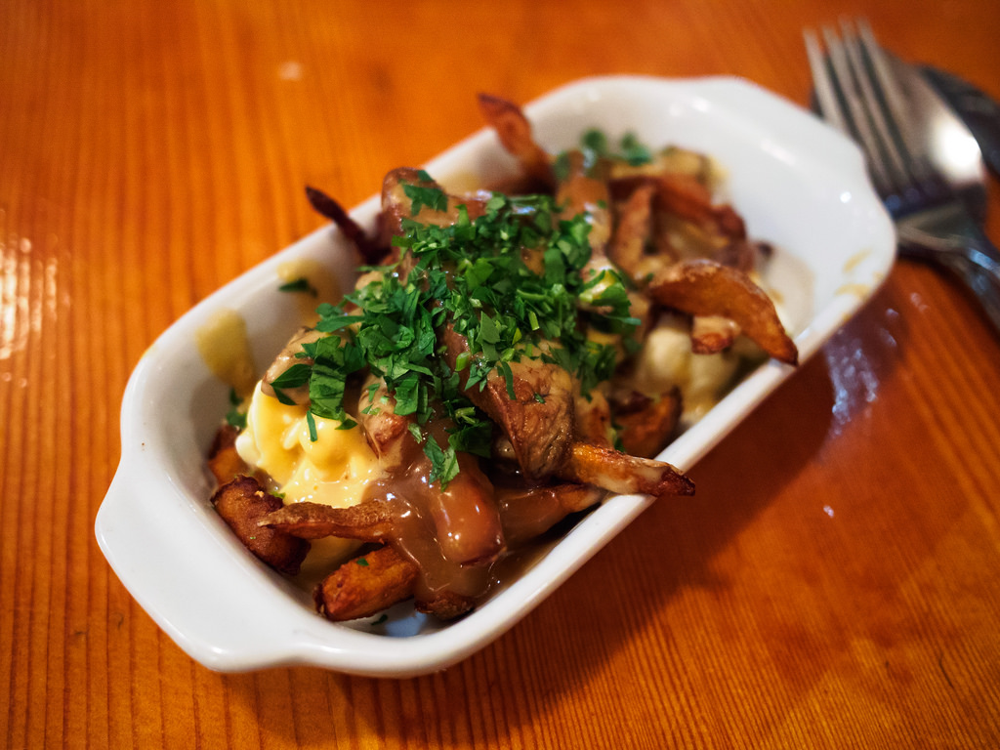
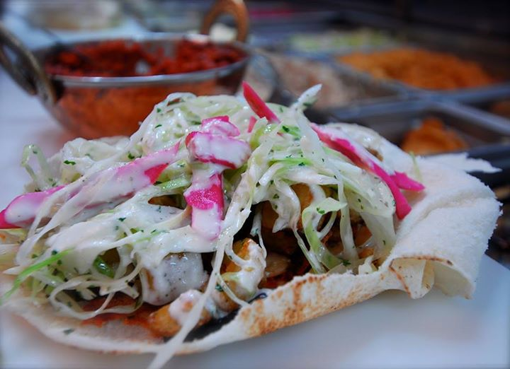
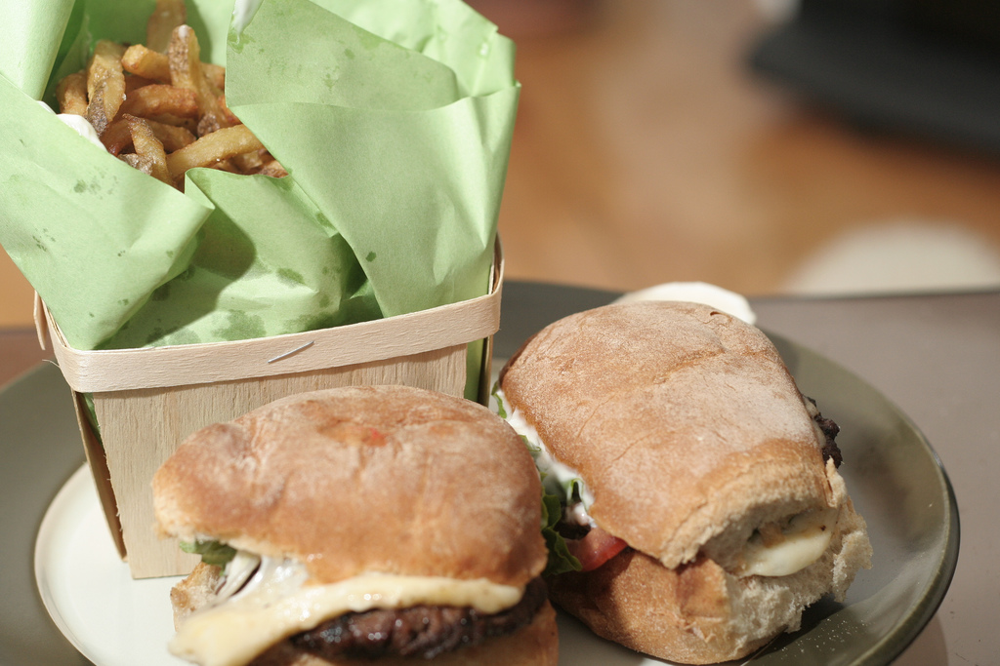

Food & Restaurants
Breakfast/Brunch: Beauty's Luncheonette

Brunch is a major part of every Montrealers weekend, and all tourists should experience the one meal any of us really eat on a Saturday or Sunday. Deciding on a single brunch spot was a little tough, because many are amazing, but we gave the spot to Beauty's simply for its long history of providing delicious morning/late afternoon eats to Montrealers since 1942. You also can't beat their milkshakes, which aren't very brunch-y, but still delectably delicious.
Upscale/Fancy: Au_Pied_de_Cochon
A tourist list without a fancy Montreal eatery would be silly, because while we may not have the dollars to drop at an upscale resto, visitors probably do. We gave our fancy spot to one of the most world-renowned restaurants in Montreal that still manages to keep things simple, as Au Pied De Cochon does classic dishes with a refined flair. When you can order a foie gras hamburger or foie gras poutine, you know you're eating somewhere special. Then there's the Cabane à Sucre Au Pied de Cochon which takes the sugar shack concept to new heights of flavour.
Shawarma/Middle Eastern: Boustan
Montrealers love their middle eastern meat in a pita and the king of the shawarma will forever remain Boustan. Go to the Crescent or St. Catherine location and you'll always find a variety of hungry folks just waiting to devour a beautifully greasy, awesomely affordable, and straight up delicious shawarma. The classic is a good option, but you're best bet is to go with "the creation," which is both the meat and veggie warps combined. Boustan also stays open really late and delivers 'til 4am, for the tourist who likes to stay out late.
Poutine & Burgers: Patati Patata
When you need simple and delicious food really quick, no resto beats Patati Patata. Despite being a bit small on the interior, the resto makes for a charming eating experience if you get a spot, mostly to watch the guys behind the counter do their thing and cook up a storm. For real, watching them go is like seeing art in motion. Aside from the ambiance, the food is everything you could ever want from classic Montreal diner eats, just without a lot of the grease. Everything is incredibly affordable too, and dare I say this place has the best poutine gravy in the city. There I said it. La Banquise lovers go now respond in pure hatred.